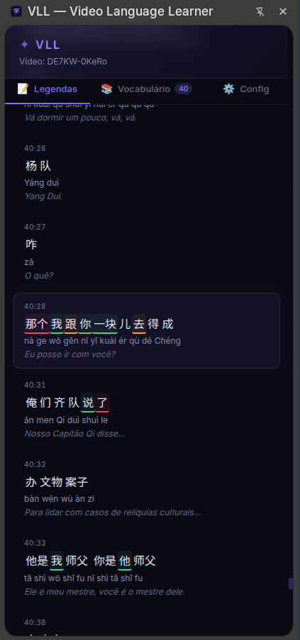
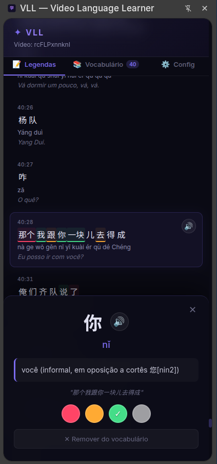
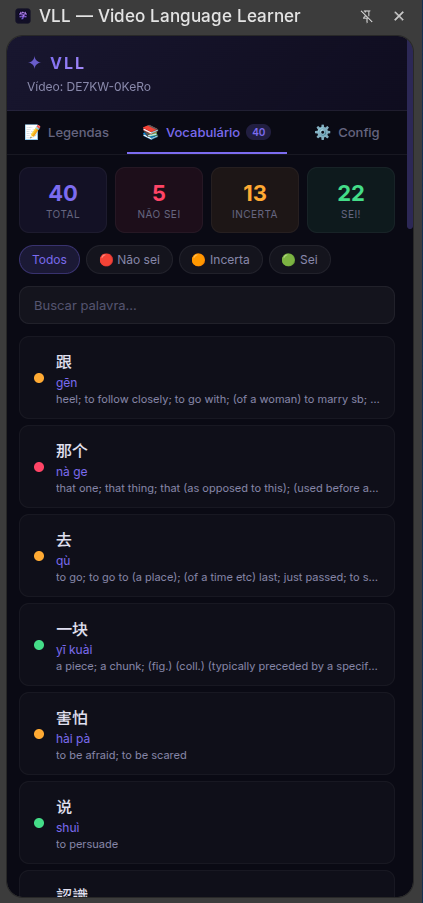
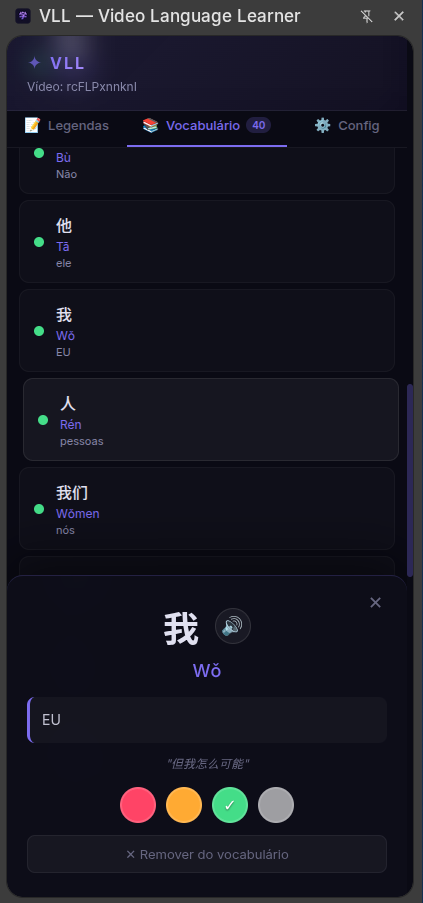
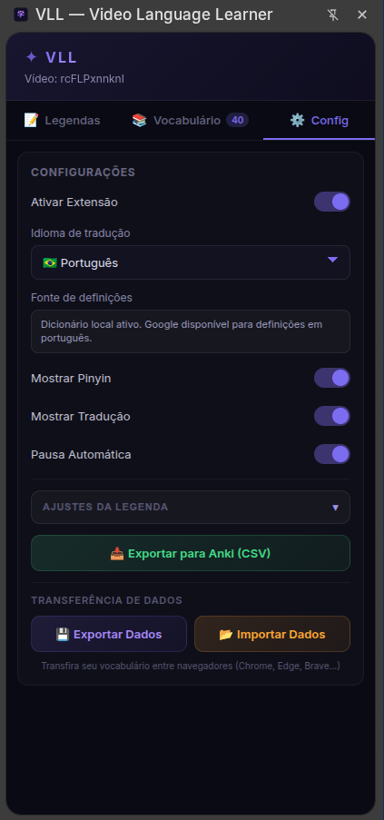
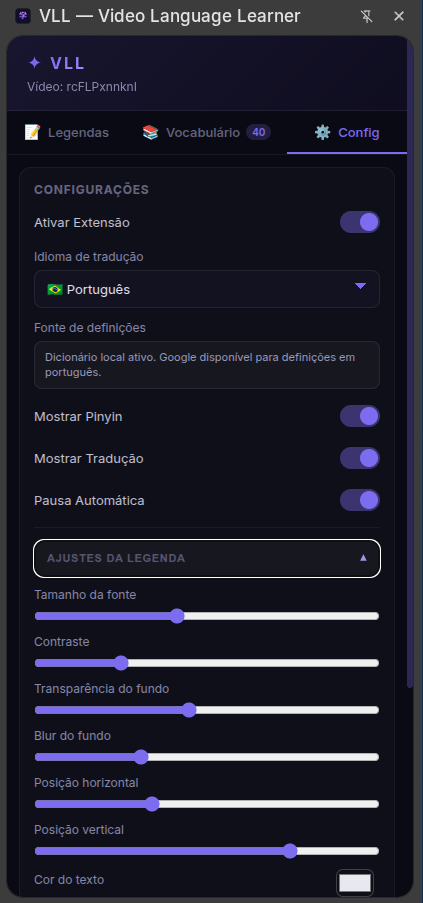

Recursos Principais


Legendas Interativas
Acompanhe simultaneamente os caracteres originais (Hanzi), Pinyin e tradução perfeitamente sincronizados.


Gerenciamento de Vocabulário
Dicionário offline com traduções instantâneas. Salve palavras e exporte para o Anki com apenas um clique.


Configurações Personalizadas
Ajuste facilmente as cores do seu nível de aprendizado e o comportamento da interface de acordo com suas preferências.
Como Começar
Baixe o arquivo ZIP da versão mais recente nas releases do GitHub.
No Chrome, acesse chrome://extensions e ative o Modo do
Desenvolvedor.
Clique em Carregar sem compactação e selecione a pasta da extensão.
Abra qualquer vídeo no YouTube com legendas em chinês e comece a aprender!